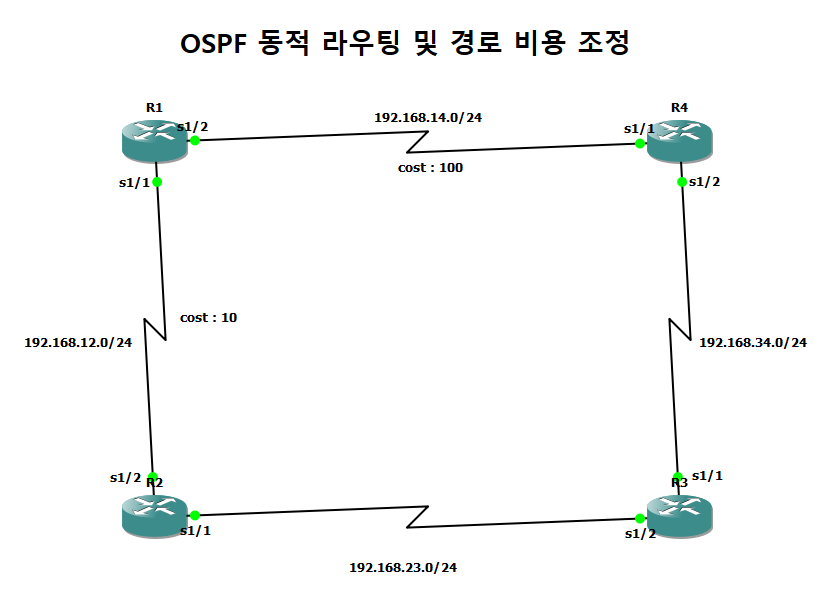

TOPOLOGY
GNS3 자체 스크린샷

GNS3의 Take a screenshot 기능으로 새로 저장한 이미지입니다. 창 테두리와 도구 패널 없이 토폴로지 장면 전체를 내보냈습니다.
이번에 확인한 범위
토폴로지 이미지와 R1의 show 명령 3개를 수집했습니다. Ping·traceroute·장애 전환 시험은 아직 수행하지 않았습니다.
CONSOLE EVIDENCE
실제 명령 출력
출력 이미지는 수집한 콘솔 텍스트로 생성했습니다. 실제 터미널 화면 스크린샷과 구분합니다.
EXPORT & REUSE
증거를 보존하고, 목적에 맞게 편집
수집 결과는 Markdown 보고서와 증거 파일을 함께 담은 ZIP으로 내보냅니다. 최종 문장의 구성과 표현은 사용자의 개인 AI 계정에서 정리할 수 있습니다.
| 파일 | 역할 |
|---|---|
| report.md · index.html | 종합 보고서와 브라우저 미리보기 |
| assets/ | 자체 토폴로지 스크린샷과 출력 이미지 |
| logs/ | 명령 원문과 수집 기록 |
| configs/ · source/ | 저장 설정과 자료 출처 |
| manifest.json | 파일 대응 관계와 무결성 확인 정보 |
| ai_prompt.md | 목적과 독자에 맞게 편집하는 프롬프트 |
데모 ZIP의 구성
토폴로지, R1 출력 이미지·텍스트, 이 미리보기 화면을 담았습니다. 원본 장비 설정과 인증 정보는 웹 데모에 포함하지 않습니다.